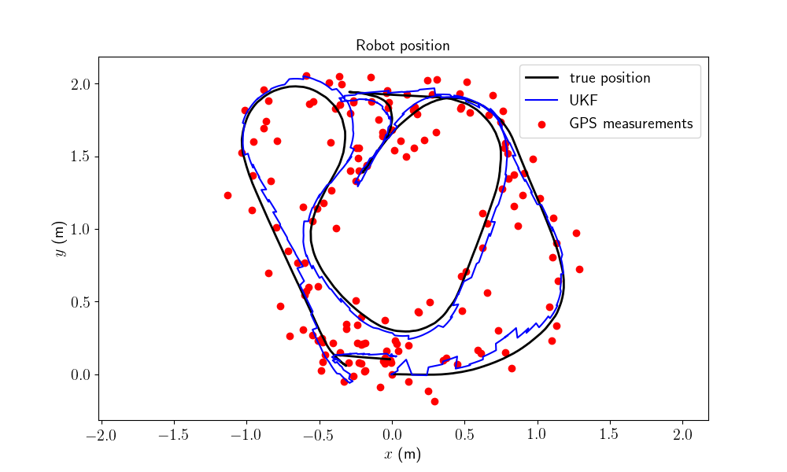
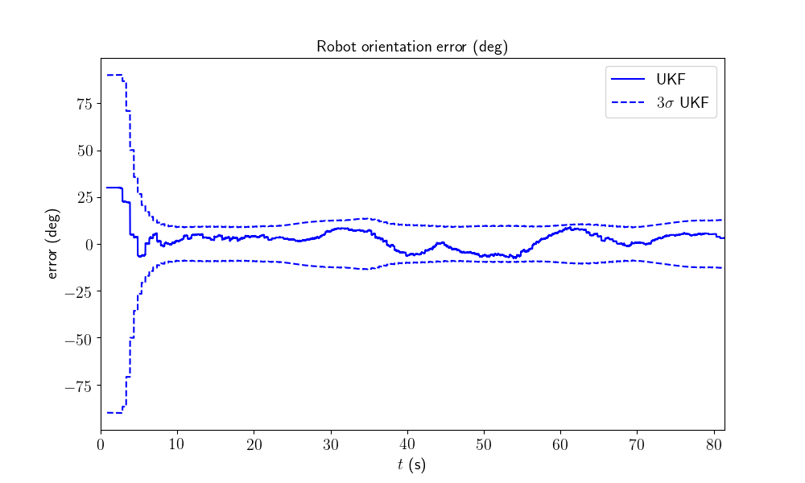
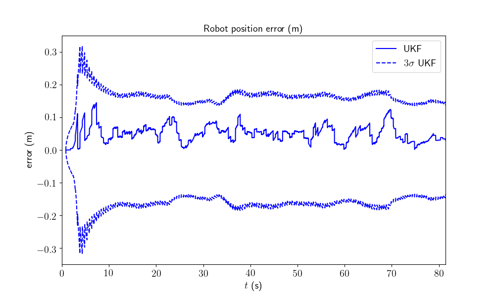

Note
Click here to download the full example code
2D Robot Localization on Real Data¶
Goals of this script:
apply the UKF for the 2D robot localization example with real data.
We assume the reader is already familiar with the considered problem described in the tutorial.
We address the same problem described in the 2D robot localization tutorial, with real data.
Import¶
from ukfm import LOCALIZATION as MODEL
import ukfm
import numpy as np
import matplotlib
ukfm.utils.set_matplotlib_config()
Model and Data¶
This script uses the LOCALIZATION model class that requires the sequence
time and the odometry frequency to create an instance of the model.
Instead of creating data, we load recorded data. We have recorded five sequences (sequence 2 and 3 are the more interesting).
# sequence number
n_sequence = 3
# GPS frequency (Hz)
gps_freq = 2
# GPS noise standard deviation (m)
gps_std = 0.1
# load data
states, omegas, ys, one_hot_ys, t = MODEL.load(n_sequence, gps_freq, gps_std)
The real data have been obtained in an experiment conducted at the Centre for Robotics, MINES ParisTech. We used a so-called Wifibot, which is a small wheeled robot equipped with independent odometers on the left and right wheels, see figure. A set of seven highly precise cameras, the OptiTrack motion capture system, provide the reference trajectory (ground truth) with sub-millimeter precision at a rate of 120 Hz.
{kind=link}
Testing arena with Wifibot robot in the foreground of the picture. We can also see two of the seven Optitrack cameras in the background.¶
We define noise odometry standard deviation for the filter.
odo_std = np.array([0.15, # longitudinal speed
0.05, # transverse shift speed
0.15]) # differential odometry
Filter Design¶
We choose here to embed the state in \(SE(2)\) with left multiplication, i.e.
the retraction \(\varphi(.,.)\) is the \(SE(2)\) exponential, where the state multiplies on the left the error \(\boldsymbol{\xi}\).
the inverse \(\varphi^{-1}(.,.)\) is the \(SE(2)\) logarithm.
We define the UKF parameters based on the model parameters.
# propagation noise matrix
Q = np.diag(odo_std ** 2)
# measurement noise matrix
R = gps_std ** 2 * np.eye(2)
# sigma point parameters
alpha = np.array([1e-3, 1e-3, 1e-3])
Filter Initialization¶
We initialize the filter with the true state plus an initial error heading of 30°, and set corresponding initial covariance matrices.
# "add" orientation error to the initial state
SO2 = ukfm.SO2
state0 = MODEL.STATE(Rot=states[0].Rot.dot(SO2.exp(30/180*np.pi)),
p=states[0].p)
# initial state-error covariance matrix
P0 = np.zeros((3, 3))
# The state is not perfectly initialized
P0[0, 0] = (30/180*np.pi) ** 2
We then define the filter as an instance of the UKF class.
ukf = ukfm.UKF(state0=state0, # initial state
P0=P0, # initial covariance
f=MODEL.f, # propagation model
h=MODEL.h, # observation model
Q=Q, # process noise covariance
R=R, # observation noise covariance
phi=MODEL.left_phi, # retraction function
phi_inv=MODEL.left_phi_inv, # inverse retraction function
alpha=alpha # sigma point parameters
)
Before launching the filter, we set a list for recording estimates along the full trajectory and a 3D array to record covariance estimates.
N = t.shape[0]
ukf_states = [ukf.state]
ukf_Ps = np.zeros((N, 3, 3))
ukf_Ps[0] = ukf.P
Filtering¶
The UKF proceeds as a standard Kalman filter with a simple for loop.
# measurement iteration number (first measurement is for n == 0)
k = 1
for n in range(1, N):
# propagation
dt = t[n] - t[n-1]
ukf.propagation(omegas[n-1], dt)
# update only if a measurement is received
if one_hot_ys[n] == 1:
ukf.update(ys[k])
k += 1
# save estimates
ukf_states.append(ukf.state)
ukf_Ps[n] = ukf.P
Results¶
We plot the trajectory, GPS measurements and estimated trajectory. As UKF estimates the covariance of the error, we have plotted the 95% confident interval (\(3\sigma\)).
MODEL.plot_wifibot(ukf_states, ukf_Ps, states, ys, t)
- 
- 
- 
All results seem coherent. This is convincing as the initial heading error is relatively high.
Conclusion¶
This script apply the UKF for localizing a robot on real data. The filter works apparently well on this localization problem on real data, with moderate initial heading error.
You can now:
test the UKF on different sequences and with a different choice of retraction.
address the UKF for the same problem with range and bearing measurements of known landmarks.
enter more in depth with the theory, see [BBB19].
benchmark the UKF with different function error and compare the new filters to both the extended Kalman filter and invariant extended Kalman filter of [BB17] (see the benchmarks section).
Total running time of the script: ( 0 minutes 6.879 seconds)